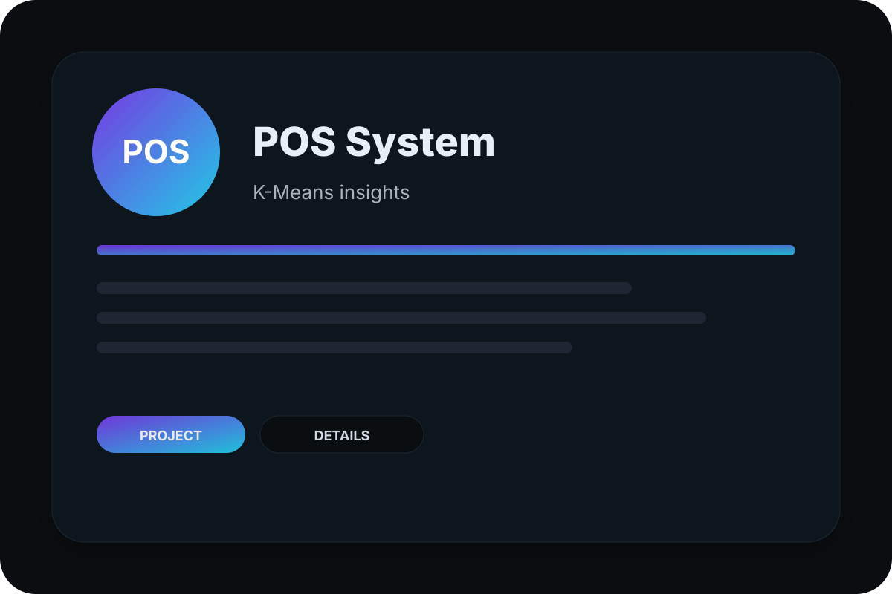
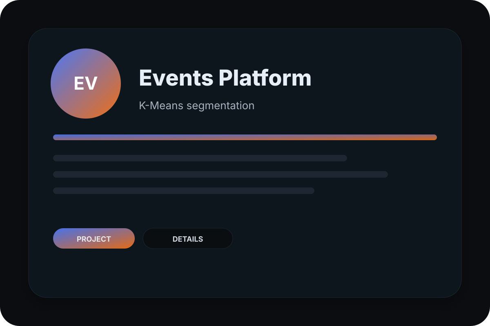

Studi Kasus · Aplikasi Web
Promosi Wisata (PAM Clustering)
Dinas pariwisata dan pengelola destinasi sering punya data kunjungan, tetapi kesulitan mengubahnya menjadi keputusan promosi. Proyek ini membangun dashboard berbasis Laravel yang mengelompokkan pengunjung memakai algoritma PAM (Partitioning Around Medoids), sehingga anggaran promosi bisa diarahkan ke segmen yang benar-benar potensial.

Masalah yang diselesaikan
Sebelum sistem ini ada, data kunjungan wisata tersimpan terpisah di spreadsheet dan hanya dibaca sebagai angka total. Tidak ada gambaran siapa pengunjungnya, dari mana asalnya, dan destinasi mana yang menarik kelompok tertentu. Akibatnya promosi dilakukan seragam untuk semua audiens, padahal karakteristik tiap kelompok berbeda.
Kenapa memilih algoritma PAM
PAM dipilih karena memakai medoid — titik data nyata — sebagai pusat klaster, bukan rata-rata seperti K-Means. Pendekatan ini lebih tahan terhadap data pencilan, yang umum terjadi pada data kunjungan wisata saat musim liburan atau event besar. Hasil klaster juga lebih mudah dijelaskan kepada stakeholder non-teknis karena setiap pusat klaster adalah profil pengunjung yang benar-benar ada.
Hasil untuk pengguna
Pengelola dapat melihat segmen pengunjung dalam bentuk visual, menyusun rencana kampanye per segmen, dan mengekspor laporan siap presentasi untuk rapat internal maupun stakeholder eksternal. Proses yang sebelumnya manual kini selesai dalam hitungan menit.
Fitur utama yang dibangun
- Clustering PAM untuk analisis segmentasi wisata.
- Dashboard admin untuk targeting & perencanaan promosi.
- Laporan siap ekspor untuk stakeholder.
Pertanyaan seputar proyek ini
Apa bedanya clustering PAM dan K-Means untuk data wisata?
Apakah sistem seperti ini bisa dipakai dinas pariwisata daerah lain?
Proyek lain yang mungkin relevan

POS K-Means
Sistem POS dengan analisis clustering K-Means untuk insight penjualan/kelompok pelanggan.

Events (K-Means)
Platform event dengan clustering K-Means untuk klasifikasi peserta dan rekomendasi lebih tepat.

Website Profile Sekolah
CMS profil sekolah lengkap ala WordPress berbasis Laravel 10 & Filament. Admin mengelola…